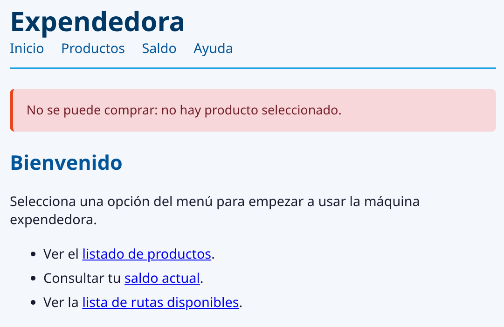
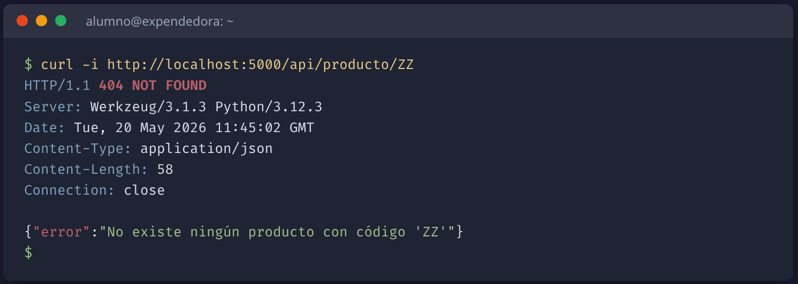

POO · CEPY · UT4
Integración: mensajes flash y API REST¶
Cerrar el PRG y exponer la app como JSON¶
Programación de aplicaciones en Python — Sesión 6
Índice¶
- Mensajes flash y
app.secret_key - API REST: misma capa de aplicación, distinta presentación
Fase de integración funcional de la app web. Asume Flask completo: routes, converters, errorhandlers, plantillas Jinja2 y formularios POST con re-render tras error. Tras esta fase quedan auth (Fase 7) y auditoría arquitectónica (Fase 8) para cerrar UT4.
1. Mensajes flash¶
flash + get_flashed_messages como canal entre dos peticiones
El problema que resuelven¶
En a5 cerramos los formularios con Post/Redirect/Get: tras un POST con éxito, el route redirige a otra URL para que recargar no repita la operación.
El precio: el dato devuelto por la operación lo teníamos en el route que procesa el POST, pero la respuesta la genera otro route distinto tras el redirect.
Necesitamos un canal que sobreviva al redirect sin meter el dato en la URL ni inventar persistencia.
Antes de seguir: qué es una cookie¶
Pequeño fragmento de datos que el servidor envía al navegador y el navegador devuelve en cada petición posterior al mismo dominio.
- Vive en el navegador del cliente, no en el servidor.
- Tamaño máximo pequeño (unos pocos KB).
- Una cookie de sesión es la cookie concreta que el framework usa para guardar la sesión actual.
Sin cookies, HTTP no recuerda nada entre una petición y la siguiente. Cada visita sería como conocer al servidor por primera vez.
Qué es un mensaje flash¶
Una cadena que un route guarda y otro route lee, una sola vez, en la siguiente petición del mismo navegador. Flask los firma en una cookie de sesión.
| Característica | Comportamiento |
|---|---|
| Ámbito | Por navegador. Otro usuario no los ve. |
| Persistencia | De un solo uso. Se vacían al leerlos. |
| Tamaño | Pequeño (cookie HTTP). |
| Tipado | Texto + categoría libre (exito, info, error). |
No son persistencia de datos. Para guardar estado del dominio está la base de datos. Son un canal efímero entre dos peticiones consecutivas.
/comprar — antes (a5)¶
@app.route('/comprar', methods=['GET', 'POST'])
def comprar():
if request.method == 'POST':
try:
cambio = servicio.comprar()
return render_template('mensaje.html',
texto=f"Cambio: {cambio:.2f} EUR.")
except ValueError as e:
return render_template('comprar.html', ..., error=str(e)), 400
return render_template('comprar.html', ..., error=None)
Necesitábamos una página dedicada (
mensaje.html) para enseñar el cambio. Tras compra, la URL final era/comprar— recargar repetía el riesgo de doble compra.
/comprar — después (a6)¶
@app.route('/comprar', methods=['GET', 'POST'])
def comprar():
if request.method == 'POST':
try:
cambio = servicio.comprar()
importe = f"{cambio:.2f}".replace(".", ",")
flash(f"Compra realizada. Cambio: {importe} EUR.", 'exito')
return redirect(url_for('inicio'))
except ValueError as e:
return render_template('comprar.html', ..., error=str(e)), 400
return render_template('comprar.html', ..., error=None)
Resultado en el navegador¶
Tras confirmar la compra, el navegador aterriza en / con el mensaje flash en la cabecera de la página:

{% with %} en Jinja2: variable local del bloque¶
El bloque flash que añadimos a base.html empieza con esta etiqueta nueva de Jinja2:
{% with mensajes = get_flashed_messages(with_categories=true) %}
{% if mensajes %} ... {% endif %}
{% endwith %}
Crea una variable local del bloque (entre {% with %} y {% endwith %}). Aquí evita llamar dos veces a get_flashed_messages().
El bloque va en
base.html, no en una página concreta. Si lo pones solo eninicio.html, los flash que aparezcan tras un redirect a/productosno se mostrarán.
Sin estilos por categoría vs. estilizado¶
El HTML que produce el bloque flash es el mismo. La categoría (
'exito','info','error') se convierte en clase CSS — tú defines los estilos para cada categoría.
Otra categoría: flash de error¶
flash(mensaje, 'error') permite distinguir visualmente los errores de las confirmaciones:

Mismo patrón que
'exito': cambia la categoría, cambia la clase CSS, cambia el estilo en pantalla. Define.flash-erroren la hoja de estilos.
app.secret_key¶
Flask firma la cookie de sesión con una clave secreta que declaramos en app.py, justo tras crear la instancia:
La firma garantiza que el contenido no se ha manipulado desde el navegador. Si alguien edita la cookie a mano, la firma no cuadra y Flask la rechaza.
Mala práctica: clave literal en producción¶
2. API REST¶
Misma capa de aplicación, distinta capa de presentación
Qué es JSON¶
JSON (JavaScript Object Notation) — formato de texto para intercambiar datos estructurados entre programas.
- Lista de Python → array JSON.
- Diccionario → objeto JSON.
- Tipos básicos (
str,int,float,bool,None) tienen equivalente directo. - Cualquier lenguaje moderno trae un parser JSON en su librería estándar.
[
{"codigo": "A1", "nombre": "Agua", "precio_final": 1.0, "cantidad": 5},
{"codigo": "B2", "nombre": "Refresco", "precio_final": 1.5, "cantidad": 3}
]
JSON es datos, no presentación. Sin estilos, sin botones. Quien lo recibe decide qué hacer: pintarlo en una tabla HTML, consumirlo desde una app móvil, guardarlo en un fichero, mostrarlo por terminal…
jsonify¶
Función de Flask que convierte un diccionario o lista de Python en una respuesta HTTP con cabecera Content-Type: application/json y cuerpo serializado.
| Aspecto | jsonify(...) |
json.dumps(...) |
|---|---|---|
| Devuelve | Objeto Response de Flask |
Cadena de texto |
Cabecera Content-Type |
application/json |
— (la pondrías tú) |
Listo para return |
Sí | No (Flask lo trataría como HTML) |
En un route Flask, siempre
jsonify.json.dumpsestá pensado para serializar a fichero o variable.
Dos routes, mismo servicio.listar_productos()¶
Las dos primeras líneas que dialogan con el dominio son idénticas. Cambia solo la última: HTML vs JSON. El servicio no sabe a cuál sirve.
Salida real de /api/productos¶
curl http://localhost:5000/api/productos | python -m json.tool produce:

El servicio devuelve tuplas; el route las convierte a
dictcondict(zip(keys, t))antes de pasarlas ajsonify. Así el JSON tiene claves nombradas y no array de arrays anónimos.
Errores en JSON¶
@app.route('/api/producto/<codigo>')
def api_producto(codigo):
try:
keys = ['codigo', 'nombre', 'precio_base',
'precio_final', 'cantidad', 'descuento']
producto = dict(zip(keys, servicio.obtener_producto(codigo)))
return jsonify(producto)
except ProductoNoEncontradoError as e:
return jsonify({'error': str(e)}), 404
Mismo código HTTP que en HTML (
404,409,400). Solo cambia el cuerpo: en vez de página HTML, un objeto JSON con la claveerror. El cliente decide qué hacer con el mensaje.
Salida real: 404 con curl -i¶
curl -i http://localhost:5000/api/producto/ZZ muestra estado, cabeceras y cuerpo:

HTML vs JSON: ¿quién es el cliente?¶
| Canal | Para quién | Ejemplo |
|---|---|---|
| HTML | Humanos con navegador | /productos muestra una tabla con enlaces. |
| JSON | Programas (scripts, apps móviles, frontends SPA, otros servicios) | /api/productos devuelve datos parseables. |
Convenio de facto: prefijo
/api/para separar visualmente rutas para humanos de rutas para máquinas.
Probar la API con curl¶
## Lista completa
curl http://localhost:5000/api/productos
## Detalle de un producto
curl http://localhost:5000/api/producto/A1
## Cabeceras + código (veremos el 404)
curl -i http://localhost:5000/api/producto/ZZ
## Salida JSON formateada
curl http://localhost:5000/api/productos | python -m json.tool
No necesitamos un cliente especial. Arrancamos el servidor en una terminal, lanzamos
curlen otra, y vemos la API funcionando sin tocar el navegador.
Detalle sin formatear¶
curl http://localhost:5000/api/producto/A1 devuelve el JSON en una sola línea:

Válido igualmente, pero menos legible para inspección manual. Por eso encadenamos
| python -m json.toolcuando queremos leerlo nosotros.
Resumen¶
- Flash = canal efímero entre dos peticiones del mismo navegador. Necesita
secret_key. - API REST = nuevo módulo de presentación. JSON en vez de HTML. Mismo
servicio.
Quedan dos fases más: Fase 7 (auth — proteger las rutas de escritura con login) y Fase 8 (auditoría arquitectónica — recorrer el proyecto y comprobar la promesa de las capas).
¿Preguntas?¶
flash
secret_key
jsonify
API REST
POO · CEPY · UT4 — Integración: mensajes flash y API REST